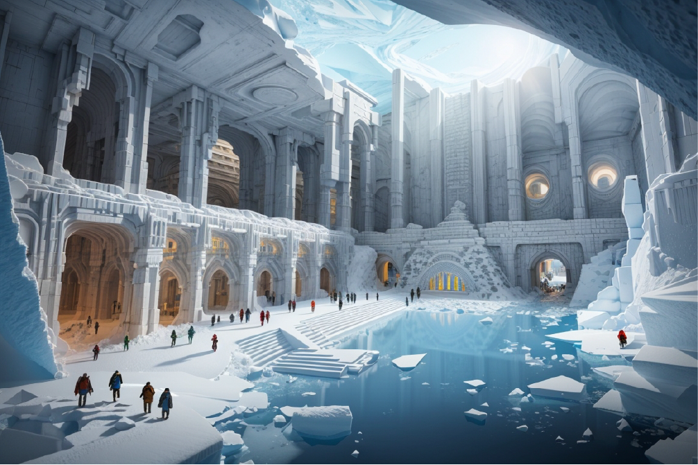

Descubrimiento Revolucionario: Se Encuentra una Ciudad Subterránea Perdida en la Antártida
Científicos han descubierto una misteriosa ciudad subterránea en la Antártida llamada "Criópolis," desafiando las expectativas al revelar una civilización avanzada que prosperó en las extremas condiciones antárticas. Este sorprendente hallazgo podría transformar nuestra comprensión de la historia y la adaptación humana a entornos extremos.
En un descubrimiento arqueológico que podría cambiar la historia tal como la conocemos, un equipo de científicos e investigadores ha anunciado el hallazgo de una misteriosa ciudad subterránea en la región antártica. La ciudad, que ha sido bautizada como "Criópolis" debido a su ubicación bajo capas de hielo, parece haber estado oculta durante milenios y presenta una asombrosa arquitectura y estructuras que desafían nuestra comprensión de las antiguas civilizaciones.
La noticia ha sacudido a la comunidad científica, ya que se consideraba imposible que cualquier civilización pudiera haber sobrevivido en las extremas condiciones de la Antártida. Las primeras exploraciones del sitio han revelado pasillos intrincados, cámaras decoradas con jeroglíficos desconocidos y tecnología avanzada que sugiere una civilización altamente desarrollada. Los investigadores están emocionados por la perspectiva de descubrir más sobre la historia de esta ciudad y su posible conexión con la leyenda de la Atlántida.
El descubrimiento de Criópolis plantea preguntas fascinantes sobre el pasado de la Tierra y cómo las antiguas civilizaciones pudieron adaptarse a las condiciones extremas de la Antártida. Además, los científicos se esfuerzan por comprender cómo esta ciudad quedó sepultada bajo el hielo y cuál fue su destino.
Este hallazgo histórico podría reescribir los libros de historia y abrir nuevas puertas a la investigación arqueológica en la Antártida.